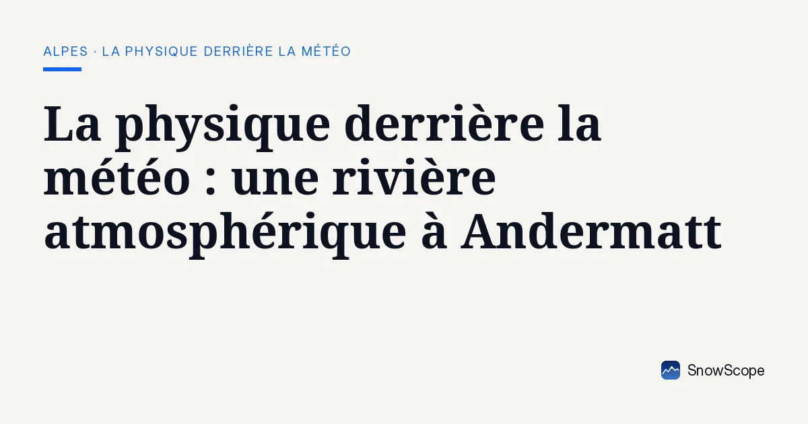

La physique derrière la météo : une rivière atmosphérique à Andermatt
À Andermatt (2963 m), la prévision donne 75 mm de précipitations du 15 novembre au 20 novembre. Pendant les heures humides, l'isotherme 0 °C se situe vers 2160 m : la limite pluie-neige est donc vers 1860 m.
Consultez les prévisions neige en temps réel pour Andermatt sur l'application SnowScopeHauteurs de neige, alertes poudreuse et carte 3D, gratuitement.
Ce que montre la prévision
À Andermatt (2963 m), la prévision donne 75 mm de précipitations du 15 novembre au 20 novembre. Pendant les heures humides, l'isotherme 0 °C se situe vers 2160 m : la limite pluie-neige est donc vers 1860 m.

La physique
Une rivière atmosphérique est une longue bande étroite d'air qui transporte beaucoup de vapeur d'eau. Au-dessus de 250 kg d'eau par mètre et par seconde, on parle de rivière atmosphérique, au-dessus de 750 d'une rivière forte. Quand elle rencontre une chaîne de montagnes, l'air doit monter et se refroidir, la vapeur se condense et les versants au vent reçoivent le plus de pluie et de neige.


Ce que cela change pour vous
- Les prévisions changent : revoyez la carte de neige avant de partir.
- Hors-piste : lisez toujours le bulletin d'avalanche officiel.
Références et crédits
- Ralph, F. M., Dettinger, M. D., Cairns, M. M., Galarneau, T. J. and Eylander, J. (2018). Defining 'atmospheric river': how the Glossary of Meteorology helped resolve a debate. Bulletin of the American Meteorological Society 99, 837-839. doi.org/10.1175/BAMS-D-17-0157.1
- Ralph, F. M., Rutz, J. J., Cordeira, J. M., Dettinger, M. D. et al. (2019). A scale to characterize the strength and impacts of atmospheric rivers. Bulletin of the American Meteorological Society 100, 269-289. doi.org/10.1175/BAMS-D-18-0023.1
- American Meteorological Society, Glossary of Meteorology: 'Atmospheric river'. glossary.ametsoc.org/wiki/Atmospheric_river
- Roe, G. H. (2005). Orographic precipitation. Annual Review of Earth and Planetary Sciences 33, 645-671. doi.org/10.1146/annurev.earth.33.092203.122541
- Minder, J. R., Durran, D. R. and Roe, G. H. (2011). Mesoscale controls on the mountainside snow line. Journal of the Atmospheric Sciences 68, 2107-2127. doi.org/10.1175/JAS-D-10-05006.1
- Wallace, J. M. and Hobbs, P. V. (2006). Atmospheric Science: An Introductory Survey, 2nd edition. Academic Press / Elsevier. ISBN 978-0-12-732951-2.
- Forecast data: Open-Meteo.com (CC BY 4.0), from the ECMWF IFS (CC BY 4.0), DWD ICON and NOAA GFS models; snow depth: SnowScope snow model. open-meteo.com/
À propos de ces chiffres
Chiffres issus de la prévision du 15 novembre : précipitations, températures et vent à plusieurs altitudes aux lieux cités. L'isotherme 0 °C est calculée à partir du profil de température ; la limite pluie-neige est prise environ 300 m plus bas. Les prévisions changent.
Citer ce bulletin
Pour la recherche, l'enseignement ou la presse : chiffres et graphiques réutilisables librement sous CC BY 4.0 avec cette citation.
SnowScope (2026), La physique derrière la météo : une rivière atmosphérique à Andermatt, https://snowscope.app/blog/fr/2026/11/alps-physics-an-atmospheric-river-15-november-2026.html, consulté le 2026-11-15
SnowScope (Atlas Labs). (2026, November 15). La physique derrière la météo : une rivière atmosphérique à Andermatt. SnowScope snow reports. https://snowscope.app/blog/fr/2026/11/alps-physics-an-atmospheric-river-15-november-2026.html
BibTeX
@misc{snowscope2026alpsphysicsanatmospheric,
author = {{SnowScope (Atlas Labs)}},
title = {La physique derrière la météo : une rivière atmosphérique à Andermatt},
year = {2026},
month = nov,
howpublished = {\url{https://snowscope.app/blog/fr/2026/11/alps-physics-an-atmospheric-river-15-november-2026.html}},
note = {Published 2026-11-15 17:57 UTC; accessed 2026-11-15}
}· CC BY 4.0 · Méthodes, données et outils →
Suivre Andermatt
Gratuit : un message quand la neige arrive, et la météo chaque matin.
Autres bulletins neige

Puy-Saint-Vincent propose un forfait adulte 1 jour à 44 EUR avec une bonne neige en décembre en altitude, comparé ici à son grand voisin Serre Chevalier.

Pila, au-dessus d'Aoste, combine un forfait journée fixe à 60,00 EUR et une neige fiable en décembre sur ses pistes d'altitude.

Orcières Merlette offre une base élevée à 1 826 m et un forfait 6 jours dès 227 EUR, ce qui en fait un choix fiable pour un séjour au ski en décembre.